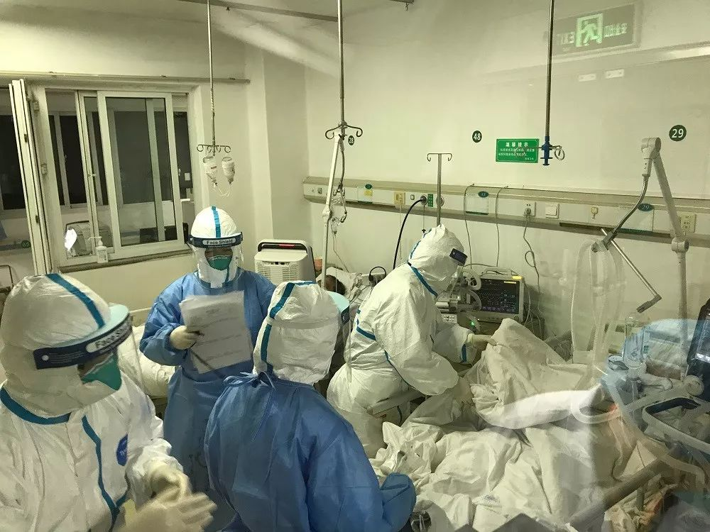

床位的抉择：武汉肿瘤患者求医之困
原文链接 备份链接 疫情严峻，武汉仍在不断征集新冠肺炎床位。重压之下，各家医院肿瘤科「只出难进」，有患者被迫出院，通过网络发帖求助；也有患者试图寻求省外求医路，却被两边「入院接收单」与「通行证」夹在中间，难寻答案。 —— 同一个家庭里的新 …

研究者正试图揭示新冠病毒的致病性、致死性机制，为临床治疗提供新依据，阶段结果是新冠病毒的致病特征与SARS相似，而进一步的结果或将由解剖揭开

2020年2月初，武汉金银潭医院隔离病区内，医护人员正在给新冠肺炎患者做治疗。武汉金银潭医院/供图
**文 |《财经》记者 辛颖 实习记者 朱贺
**
编辑 | 王小
2020年2月17日下午5点，第三例武汉新冠肺炎病死患者遗体病理解剖正在进行中，负责人华中科技大学同济医学院法医刘良当日上午在朋友圈发布信息，“近期谢绝采访和打扰，需要专心做事，好好休息，保存体力和脑力”。
刘良所带领的团队已在前一天完成前两例遗体病理解剖，样本送检。加快速度，预计10天能出结果。
而在2月16日、17日，两份关于新冠肺炎患者病理检验的论文均已发布，得出的结论均指向，新型冠状病毒的病理特征与SARS感染相似。这两篇论文由武汉大学中南医院病理科进行肺部样本活检，解放军总医院第五医学中心感染病诊疗与研究中心进行死亡后微创病理诊断，对病例的肺、肝和心脏组织取样。
样本活检与刘良所进行的全面尸检不同。多位业内人士向《财经》记者分析，活检样本的优势在于更接近疾病的真实状态，排除了死亡本身对样本的影响。但是活检病例的机会可遇不可求，活检以及死亡后微创病例检查都是局部性的，只有全面尸检才能揭开病毒隐藏在患者身体中的全貌。
截至2月18日24时，全国新冠肺炎累计死亡病例2004例。首例出现在1月9日，随后，病理学家提出对死亡病例的尸检解剖，希望为这一全新病毒的致病机理研究提供更多帮助。
2月18日下午，国家卫健委高级别专家组组长、中国工程院院士钟南山指出，对感染新冠病毒去世患者的尸体解剖很重要，17年前对SARS患者的尸体解剖说明了肺是怎样病变的，也显示了除肺部以外，病毒对全身脏器的影响情况。
更多的病理诊断专家正在前往武汉支援。除了已在一线的中国人民解放军陆军军医大学第一附属医院教授、院士卞修武外，2月17日，上海交通大学医学院附属瑞金医院病理科主任王朝夫带队2名病理学专家，1名超声诊断专家、2位基础病理学医生，也赴汉开展病因诊断研究。他们试图揭示新冠病毒的致病性、致死性病理，给未来临床治疗危重症患者提供依据，降低死亡率。
遗体解剖要求高
盼望促成此事的各方都经过了漫长的准备，至2月15日，国家卫健委在武汉召开关于病死病例尸检讨论会，当天晚上9点，刘良就接到金银潭医院院长张定宇电话，称有一个新冠肺炎逝世患者遗体可以做解剖手术。从国家协调讨论到执行仅几个小时。
据《北京青年报》报道，刘良和团队在1月24日向湖北省政府递交申请，强调对新冠肺炎病死患者全面尸检的重要性和可行性。并在此前完成详细的预案、进行模拟演练，这些步骤对涉及传染病的尸检都尤为重要。
在解剖过程中，操作人员的感染风险甚至超过一线救治人员，上海瑞金医院的病理团队出发前，在2月16日下午进行了长达4小时的三级防护标准培训。
“解剖病例会帮助认识病的特点，贯彻在治疗里，特别是在通气上能不能改变方式，让气道通畅。”钟南山介绍，目前已得到资料，发现新冠肺炎患者表现与SARS有点不一样，例如肺部不是想象中严重的纤维化，但炎症很厉害，有大量黏液。这与临床发现吻合，一些患者虽然痰不太多，但是非常粘，阻碍正常通气。
新冠肺炎的临床治疗，现在确实遇到了瓶颈。上海驰援湖北医疗队领队郑军华进驻以收治重症患者的金银潭医院后，在遇到长期抢救但效果不好的病例时十分困惑，“CRRT（连续肾脏替代疗法）、ECMO（人工膜肺）等脏器替代医疗技术已经非常先进，但依然没能挽救他们的生命，如果能了解发病机制，或许会有进一步的治疗方案。”郑军华告诉《财经》记者，他在2月12日左右，开始与金银潭医院沟通解剖诊断的想法。
金银潭医院是提供此次病死患者尸检场地的第三方合作者。而涉及传染病的尸检对场地要求非常高，一位资深法医对《财经》记者坦言，如果不是生物安全等级达到P3、P4的实验室，团队是不敢承接涉传染病尸检工作的。
据《财经》记者了解，作为一家传染病医院，金银潭医院虽然没有严格的高等级生物安全实验室，但原本就建有负压手术室。“这样就符合一些基础要求，再通过其他条件上的弥补，来保证病毒不会传播、扩散产生次生灾害，也能保证操作人员自身不被感染。”一位知情人士告诉《财经》记者。

2020年2月初，武汉金银潭医院隔离病区内，医护人员正在给新冠肺炎患者做治疗。武汉金银潭医院/供图
金银潭医院的相关负责人对《财经》说，尸检准备工作细节要积累一些成熟的经验再对外公开，目前暂不介绍。
两份早期完成并已经发布的报告均由医疗机构内部的临床病理研究人员完成。正在紧张中的此次遗体解剖，得到行政和卫生部门的批件。
遗体病理解剖的重头戏，涉及临床病理研究和法医病理研究，前者在医疗机构，后者提供司法服务，在中国能兼顾两者的专家实在少。中山医科大学法医学博士左芷津告诉《财经》记者，“临床病理研究的是疾病，更擅长分析疾病的作用机制和形态学的改变，也更懂传染病防控。法医病理专注死亡原因和死亡机理的分析，更擅长解剖。
每个死亡病人都会有共同点，但也有个性。具有典型代表意义的，更希望能够做病理诊断。找到合适的病例遗体很重要，郑军华及其团队负责筛选病例，那些在经过长期治疗效果不佳，多器官功能受到损伤的遗体，对了解疾病的发生发展更有意义。特别是急性呼吸衰竭，急性心功能衰竭。
此次疫情中，很多病人都出现休克和凝血机制障碍，包括肝肾功能损伤。
整个团队最大的顾虑，是家属必须签署知情同意书。根据《传染病防治法》第四十六条规定，对传染病病人尸体或者疑似传染病病人尸体进行解剖查验，应当告知死者家属。团队在和家属充分沟通后，他们同意了。
2月16日尸检前，整个团队专门为逝者默哀。
偶然获得两份活检样本
无论是已经发表的论文，抑或病理解剖，大家都会将新冠病毒和SARS做对比。
全球首发新冠肺炎患者病理结果的论文，取样自一位50岁男性患者。他曾于1月8日—12日赴武汉旅游，1月14日为发病第1天，出现轻度畏寒、干咳，未就诊。1月21日因发烧、畏寒、咳嗽、身体乏力和呼吸急促等症状就诊。胸部X光片显示双肺多发斑片状阴影，医院取了患者的咽拭子标本。1月22日确诊为新冠肺炎患者。
1月27日下午，患者发病的第14天，低氧血症和呼吸急促加重。接受氧疗(100%浓度，流速40 L/min)后，血氧饱和度降至60%，心脏骤停。之后立即接受了有创通气、胸部按压和肾上腺素注射。不幸的是，抢救没有成功，于18时31分死亡。
当日，患者逝世后，研究人员通过微创，从患者的肺、肝和心脏组织中取得样本，进行了死亡后微创病理检查。
检查结果显示，双侧弥漫性肺泡损伤，伴细胞纤维粘液样渗出物。右肺有明显的肺细胞脱落和透明膜形成，表明患者有急性呼吸窘迫综合征(ARDS)。左肺组织显示肺水肿伴透明膜形成，提示患者有早期急性呼吸窘迫综合征（ARDS）。双侧肺可见以淋巴细胞为主的间质性单核细胞炎性浸润。肺泡内可见多核合胞体细胞和非典型增大的肺细胞，呈病毒样细胞病变。核内或胞浆内未见明显的病毒包涵体。
2月17日，《柳叶刀呼吸医学》在线发表了这篇名为《新型冠状病毒相关急性呼吸窘迫综合征的病理学发现》的论文。
该论文指出，新型冠状病毒的病理特征与SARS和中东呼吸综合征(MERS)冠状病毒感染极为相似。X光片显示患者肺炎进展迅速，对于左右肺的损害存在差异。此外，肝组织显示中度微血管脂肪变性和轻度小叶活动，但没有确凿的证据表明是新型冠状病毒感染或药物导致的肝损伤。心脏组织未见明显的组织学变化，表明新型冠状病毒感染可能不直接对心脏造成损害。
淋巴细胞减少是新冠肺炎患者的常见特征，可能是与疾病严重程度和死亡率相关的关键因素。
研究人员直接据此对临床治疗提出建议，虽然不推荐在新冠肺炎治疗中常规使用糖皮质激素，“但根据肺水肿和肺透明膜形成的病理结果，应考虑针对重症患者及时、适当地使用糖皮质激素和呼吸机治疗，以防止急性呼吸窘迫综合征的发展。”
这例新冠肺炎重症患者的临床和病理发现，不仅有助于明确患者的死亡原因，也将有助于理解新冠病毒的发病机制，对医生制定针对类似重症患者的及时治疗方案也将有帮助，降低死亡率。
在患者死前取到新冠肺炎活检样本则来自偶然机会。武汉中南医院病理科在回顾性研究时偶然取得了两份新冠肺炎活检样本。来自中南医院收治的两名癌症患者。他们准备接受肺叶切除术，当时均未表现肺炎症状。因此正常取样进行临床病理诊断，而在后期发现两人在取样前均已感染新冠病毒，但尚未发病。
中南医院病理科田素芳告诉《财经》记者，由于取样时并不清楚感染情况，因此也难以谈及特别防护，但固定样本的时间足够长，而且在脱水等流程要经过不同浓度梯度的酒精对病毒灭活，所幸未对病理研究人员产生影响。
田素芳的患者之一，是一位84岁的女性，其CT扫描中发现右肺中叶有1.5厘米长的肿瘤。患者已有30年的高血压和2型糖尿病病史。在中南医院住院的第6天，进行了胸部增强CT检查，证实右肺中叶出现不规则的实性结节，双肺磨玻璃样病变。
该患者总体状况良好，没有发烧或呼吸道症状，并且双肺听诊清晰。在入院第12天，进行了右肺中叶的胸腔镜切除手术。在第16天，患者出现呼吸困难，胸闷，喘息和干咳。她被诊断为“不明原因病毒性肺炎”。在第24天，咽拭子测试呈阳性，被转移到特殊隔离病房。她在第27天进入昏迷状态，并在入院第29天死亡。
这位老年女性患者在住院期间没有发烧。随后的临床资料证实，她曾与同一病房间另一名患者有接触，而该患者后来被发现感染了新冠病毒。
这一病例是新冠病毒暴发早期的常见情况——在医院里，同一房间的患者由于暴露而被交叉感染。
2月16日，田素芳的这一研究结果发表在多学科预印本平台Preprints发布，预印本是尚未被同行评审并发表在期刊上的研究，在大多数情况下，可以被视为最终草案或工作底稿。
论文中出现的另一名患者，是一位有20年的高血压病史的73岁男性，于体检中发现右肺下叶结节，随后的穿刺活检中诊断出肺腺癌。患者在活检后一周入院，三天后手术。在术后第2天的胸部CT中，显示该患者右肺上叶有斑片状磨玻璃样阴影，在后来的回顾性检查中，发现是“疑似非典型病毒性肺炎”。
术后第9天，该名患者有发烧症状，伴有干咳、胸闷和肌肉疼痛。新冠病毒核酸检测结果为阳性，后又住进传染病病房，经过20天的治疗康复出院。
“我们的研究可能代表了疾病的早期阶段，和SARS有很多相近的特点，希望能够对临床医生的治疗方案有所启发。如果还有系统尸检，结合辅助检查以及各种临床及实验室数据，会更全面地了解此疾病并指导临床治疗。”田素芳说。
金银潭医院进行的全面尸检仍在等待结果，郑军华相信一定会有新的发现，“这是一个新的疾病，对病理、生理的变化还不了解，通过尸检会知道病毒攻击的方向、靶器官以及对其他器官的影响，包括全身各处繁殖、侵袭的场所发生的变化。我们会离真相越来越近。”

▲点击图片查看更多疫情报道
责编 | 蒋丽 lijiang@caijing.com.cn
本文为《财经》杂志原创文章，未经授权不得转载或建立镜像。如需转载，请在文末留言申请并获取授权。
原文链接 备份链接 疫情严峻，武汉仍在不断征集新冠肺炎床位。重压之下，各家医院肿瘤科「只出难进」，有患者被迫出院，通过网络发帖求助；也有患者试图寻求省外求医路，却被两边「入院接收单」与「通行证」夹在中间，难寻答案。 —— 同一个家庭里的新 …
原文链接 备份链接 2 月 17 日，《柳叶刀 · 呼吸医学》（_The Lancet Respiratory Medicine_）在线发表了首份基于尸检样本的新冠肺炎病理学报告。 该论文通讯作者之一为中科院院士、解放军总医院第五医学中心 …
原文链接 备份链接 “病理诊断是疾病诊断的金标准”2月16日凌晨3点50分，全国首例新冠病毒肺炎患者遗体解剖工作在武汉市金银潭医院顺利结束，由华中科技大学同济医学院法医病理学教授刘良及其团队完成，14小时后，他们又完成了第二例遗体解剖 …
原文链接 备份链接 2月17日，湖北省孝感市孝南区妇幼保健院，医护人员在进行体温测量。中青报·中青网见习记者 鲁冲/摄 本文约3780字 预计阅读时间10分钟 口述：四川大学华西医院重症医学科主任 康 焰 整理：中青报·中青网记者 王 …
原文链接 备份链接 编者按：1月28日，HIV感染者“HIV松鼠哥”发微博称，可以向确诊的新冠病毒肺炎患者免费提供“克力芝”——一种被列入《新型冠状病毒感染的肺炎诊疗方案》的抗HIV药物，药品则主要来自国内HIV感染者的捐赠。从那天起，他 …